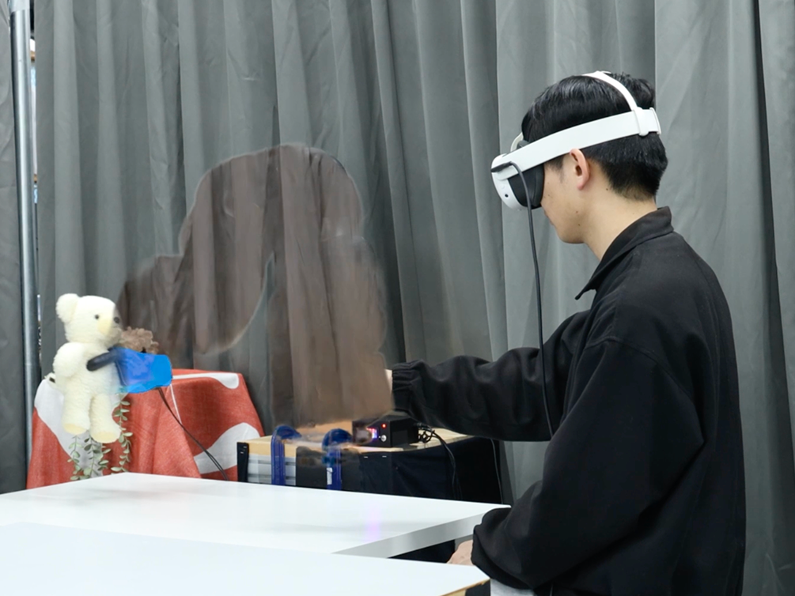
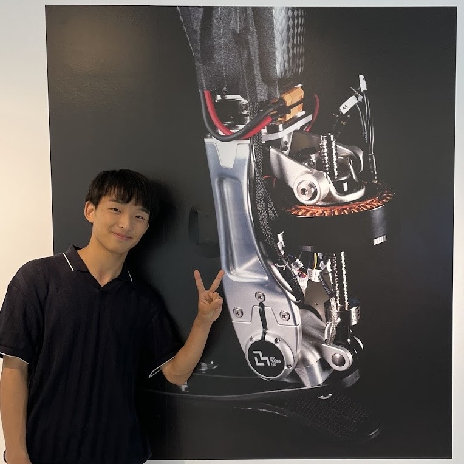

UIST2026
Masahiro Ohta
太田 雅啓
Human-Computer Interaction & Robotics
The University of Tokyo B4 / Keio Media Design RA
Featured Projects
Publication List
-
Stretched Reality: Immersive Deformable Environments through Attention-Aware Hand Redirection
In ACM SIGGRAPH Asia 2026 Emerging Technologies. ACM, 2026.
-
Body Sublimation: Designing State-Changing Extended Hand for Embodied Out-of-Reach Interaction
In Proceedings of the 39th Annual ACM Symposium on User Interface Software and Technology (UIST'26). ACM, 2026.
-
ROomBOT: A Room as an Assistive Robotic Interface based on Cable-Driven Parallel Robotics
In Proceedings of the 20th International Conference on Tangible, Embedded, and Embodied Interaction (TEI'26). ACM, 2026.
-
Public Hand: Proximity-Aware Manipulation of Robotic Hand Shared with Multi-User in Robotic Room
In ACM SIGGRAPH 2025 Emerging Technologies. ACM, 2025.
-
Force to Strain Transducer in Optical Fiber Attachment
In CLEO 2025. Optica Publishing Group, 2025.
Awards
-
Special Recognition Award (Runner-up)
Twentieth International Conference on Tangible, Embedded, and Embodied Interaction (TEI'26)
-
DIAMOND Award
Student Idea Factory, Japan Association for the Advancement of Science (JAAS)
Domestic Conferences
-
Body Sublimation: XRとロボットによる身体化感覚を保った物体操作のための身体レンダリング手法
日本バーチャルリアリティ学会大会（VRSJ 2026）
-
空間知能化ロボティクスに基づく身体動作支援プラットフォームの基礎検討
日本バーチャルリアリティ学会大会（VRSJ 2025）
-
身体動作選択的なエフェクト提示のための高速プロジェクタの投影パターンの検討
インタラクティブシステムとソフトウェアに関するワークショップ（WISS 2024）, Demo
-
地面圧力分布計測によるかかと上げ動作時の足関節の座標推定に向けた基礎検討
第24回計測自動制御学会システムインテグレーション部門講演会（SI 2023）